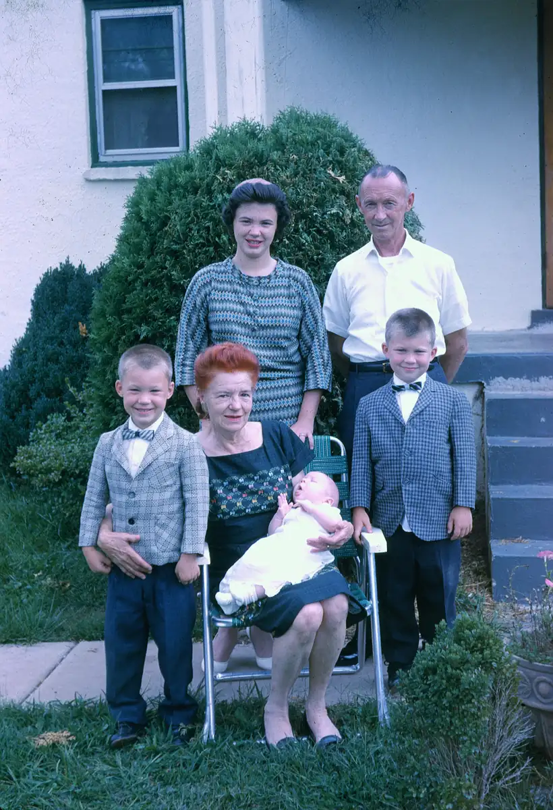

Home / Slides / Tray-06-David / tray-06-slide-25
tray-06-slide-25
← Return to Tray-06-David
← tray-06-slide-24 tray-06-slide-26 →
Back: Geraldine Krehbiel and Gerald E. Renshaw. Front, Left to right: Richard Krehbiel, Georgenna Renshaw holding newborn grandson David Krehbiel, Mike Krehbiel. July 1963. Taken in front of grandpa's house in Centreville, VA. (B&W negative found.)

Actual size: 0.89" × 1.30" · Scanned at: 1800 dpi · 3.72 MP (1595×2334) · Image date: 21 May 2005 · Comment date: 21 May 2005
Copyright © 2005–2026 Thomas Krehbiel. Images are freely distributable for personal use. For more information about these images contact Thomas Krehbiel (tkrehbiel@gmail.com).
Photos were scanned at either 300dpi or 600dpi, depending on the quality of the photograph. Slides were scanned at 1800dpi. Documents were scanned at 100dpi or 150dpi. Photoshop enhancements: most images have had their contrast improved. Some color photos were corrected to restore color balance. Some blurry images were mildly sharpened. Occasionally dust, scratches, and blemishes were removed digitally.
{kind=link}